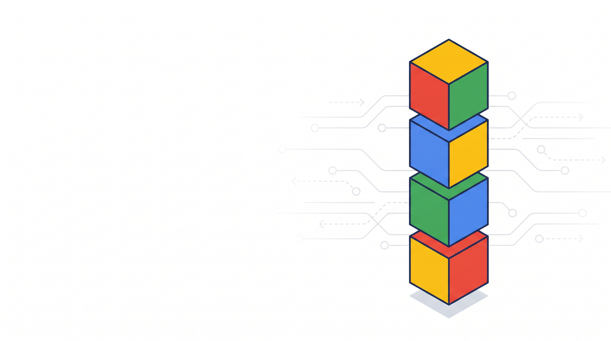
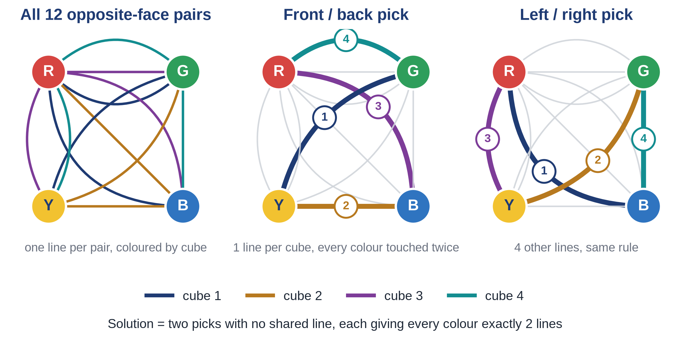
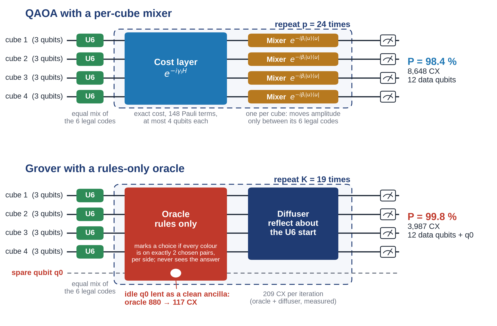

| Experiment | two-qubit gates | Perfect simulator | qBraid SV1 | Rigetti QPU | Random guess |
|---|---|---|---|---|---|
| 4-cube tower, Grover 19 steps | 3,987 | 99.85 % | 99.95 % ± 0.04 | – | 0.15 % |
| 4-cube tower, QAOA 24 rounds | 8,648 | 98.5 % | 98.6 % ± 0.2 | – | 0.15 % |
| Bonus 5-cube tower, QAOA 24 rounds | 14,266 | 47.9 % | 46.6 % ± 1.1 | – | 0.026 % |
| 4-cube tower, Grover 1 step | 225 | 1.4 % | – | 0 / 500 | 0.15 % |
| Bonus 5-cube tower, Grover 1 step | 287 | 0.23 % | – | 0 / 500 | 0.026 % |